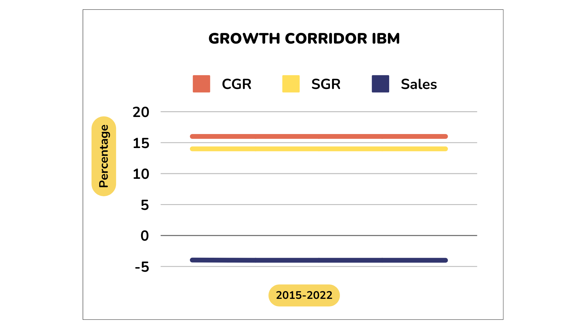

Strategy · Case Study · Scenario Modeling
IBM Strategic
Growth Analysis
A strategic-management case on IBM: building a quantified 'growth corridor' for the company, running a SWOT analysis, and modeling growth scenarios to assess whether IBM's strategic direction can deliver the growth it needs.
At a Glance
The analytical toolkit
Framework
Growth Corridor
A quantified corridor mapping the gap between IBM's momentum growth and its growth ambitions.
Diagnosis
SWOT
Strengths, weaknesses, opportunities, and threats grounded in IBM's market position.
Modeling
Scenarios
Growth scenarios built in Excel to stress-test the strategic options against the corridor.
Exhibit
The growth corridor

The quantified growth corridor built for the case — the core exhibit the scenario analysis runs against.
Full Report
Read the case analysis
The full assignment walks through the corridor construction, SWOT, and scenario results.
Viewer not loading? Open the PDF in a new tab.